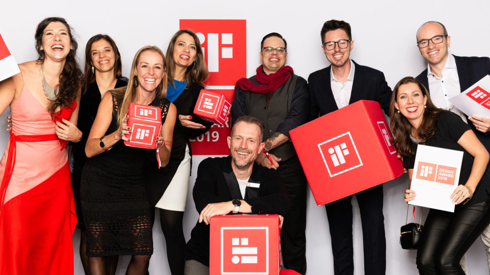
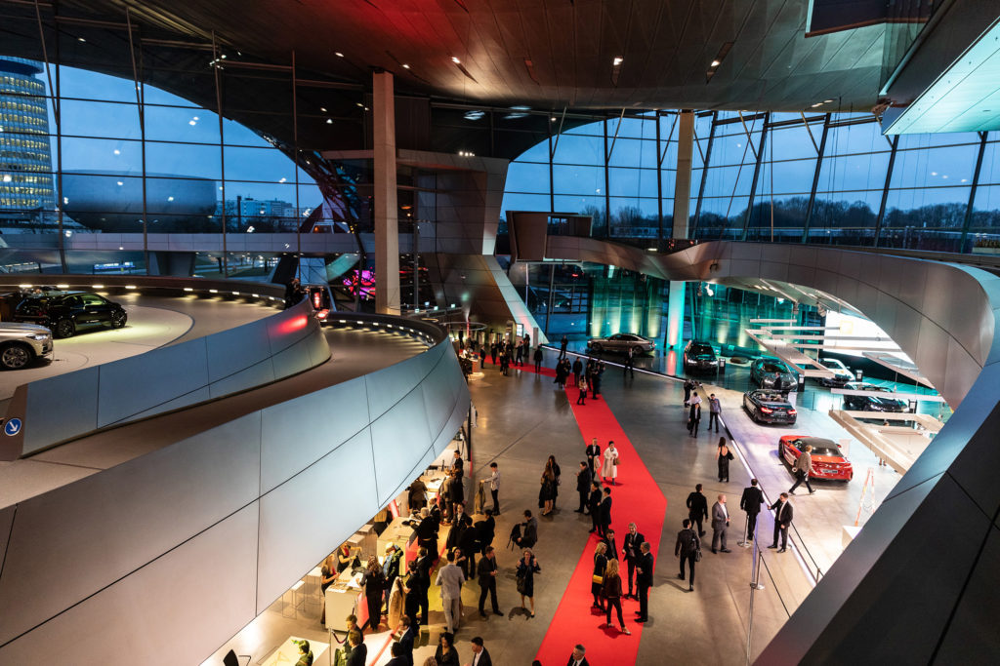

18 de mar de 2019
#design #ifdesign #brasileiros #alemanha
Fonte: Gazeta do povo
Todos os anos quando os vencedores do iF Design Awards são anunciados, a notícia dos produtos premiados vem acompanhada da explicação sobre a importância do certame para a área de design. Na cobertura de HAUS costumamos afirmar que este prêmio é o equivalente ao Oscar para o cinema. E não há nenhum exagero em tal comparação.
 Designers brasileiros marcaram presença na entrega do iF Design Awards em MuniqueDe acordo com Letícia Castro, diretora do Centro Brasil Design (CBD), que esteve na Alemanha acompanhando o evento, a taxa brasileira de conversão de inscrições em prêmios é considerada alta, chegando, na média dos últimos anos, a cerca de 30%. “Todos os anos temos um número significativo de brasileiros. Dentro do iF estamos entre os 10 mais premiado do mundo, o que reforça a importância do design brasileiro”, explica Letícia. O CBD, com sede em Curitiba, é a entidade autorizada pelo iF Design a representar o prêmio no Brasil. “Uma das grandes características que a gente tem é a criatividade. Por vezes os designers enfrentam restrições orçamentárias e nesse cenário a criatividade é ainda mais importante”, diz.
O país levou para casa 16 certificações em 2019 nas áreas de design de produto, embalagens, design gráfico e de serviço. Na área do design de móveis o Brasil, há vários anos, tem um grande destaque, até pela tradição do mobiliário brasileiro. De acordo com Letícia, o que o CBD vem observando com alegria o desenvolvimento brasileiro nas outras disciplinas premiadas pelo iF, como a arquitetura e o design de embalagens e comunicação. Dos 16 projetos brasileiros premiados, cinco tinham representantes na Alemanha. Conheça detalhes dos projetos que a partir de agora poderão usar o selo iF Design Awards para sempre.
 Foto: Roman Thomas/iF DesignEmbalagens de madeira fazem parte da história da família do jovem designer curitibano Bruno Camargo. Seu avô que emigrou da Europa para o Brasil na primeira metade do século passado, desenvolveu, no bairro Umbará em Curitiba, uma pequena fábrica que produzia as barrica de madeira para armazenar o chá vendido pela Leão Júnior. Agora Bruno recebeu o prêmio de design pela linha Pipot, que se propõe a embalar, em uma caixa de madeira, bebidas e produtos alimentícios finos como queijos e vinhos. “Mas o Pipot pode também ser uma embalagem para joias e outras peças raras”, pontua. Ele acredita que seu projeto atualiza para a realidade comercial dos dias de hoje o que seu avô fez ao desembarcar por aqui.
Veja o artigo original →